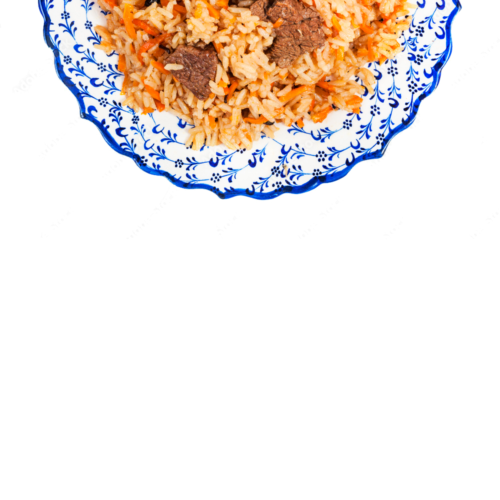

Ingredients
- 1 kg rice
- 1 kg meat
- 1 kg carrot
- 300 ml oil
- 4 onion
- Sult
Repice
- The rice is washed several times in clean water
- Wash the meat and cut it, Peel onions and carrots.
Cut 4 onions into thin semicircles and carrots into 1 cm long straws.
- The pot is heated,
filled with oil and continue to heat until lightly browned.
- Put the onion in the pot and fry until it turns golden
- When the onion is fried,
put the meat on top of the onion and fry it until it forms a crust.
- Carrots are stuffed and fried for 3 minutes without stirring. Then all are fried 10 times, stirring occasionally.
- Simmer for 30 minutes
- Turn the heat to maximum and pour boiling water over the rice until it is 3 cm high.
- Once the rice has absorbed the water, reduce the heat to medium and cook until the rice is ready.
- The pot is closed, the fire continues to subside and meal is poured for 30 minutes. The rice is ready!
If My web page or Repices have a problem tell me please
Palov by Master site